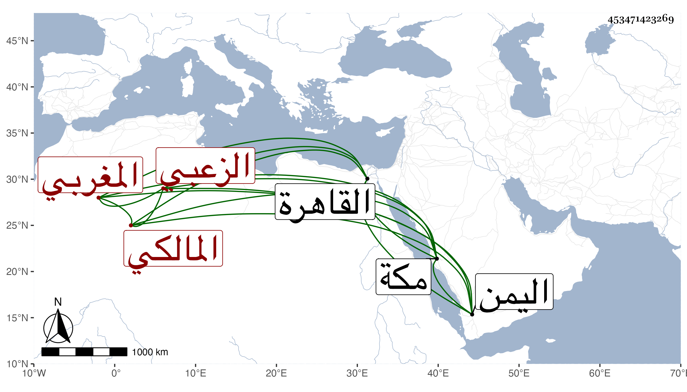

0902Sakhawi.DawLamic.ITO20230111-ara1.EIS1600.453471423269
Biography ID: 453471423269
845
محفوظ بن مبارك بن منصور بن إبراهيم الزعبي المغربي المالكي . قدم القاهرة فسمع على أم هانئ الهورينية ومن شاركها في البخاري في آخرين ، وهو ممن حضر عندي وسمع علي بقراءة ابنة له في الموطأ حين عرضها له ، وكان فاضلا سافر لمكة ثم لجهة اليمن ثم لمندوة وزوج ابنته للشيخ نور الدين الجرهي شيخ الجماعة ، ووصفه ابن عزم بصاحبنا .
